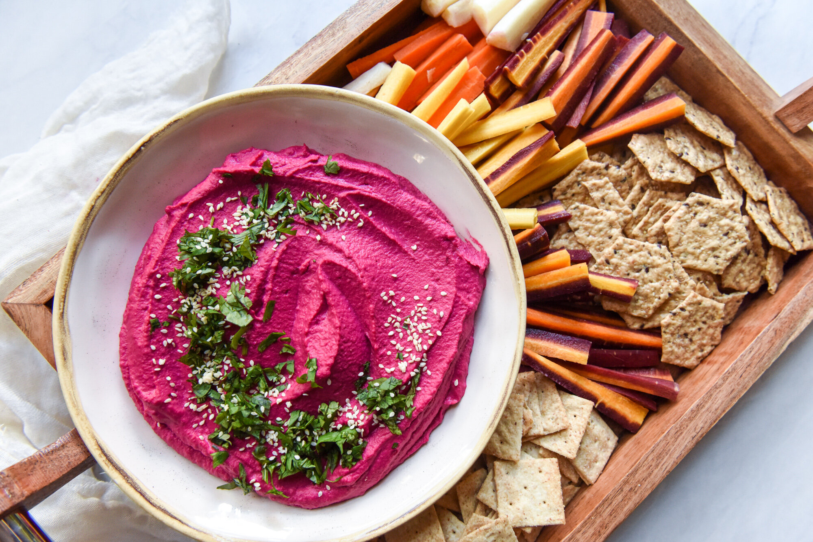

Beet Hummus

"Fact: Beets are the best way to fight off bears. The bears hate beets." - Dwight Schrute
Ingredients
2 medium-sized
Schrute Farm
beets
1 can (15 ounces) chickpeas, drained and rinsed
2 cloves garlic, minced
1/4 cup tahini
1/4 cup lemon juice
1/4 cup olive oil
Salt and pepper to taste
Instructions
Preheat your oven to 400 degrees Fahrenheit (200 degrees Celsius).
Wrap the beets in aluminum foil and place them on a baking sheet.
Roast the beets in the oven for 50-60 minutes, or until they're tender.
Once the beets are done, let them cool for a few minutes before peeling off the skin.
In a food processor, combine the roasted beets, chickpeas, garlic, tahini, lemon juice, olive oil, salt, and pepper.
Blend the mixture until smooth and creamy, adding a little bit of water if necessary to get the desired consistency.
Serve and enjoy your beet hummus
Previous recipe
Main page
Next recipe